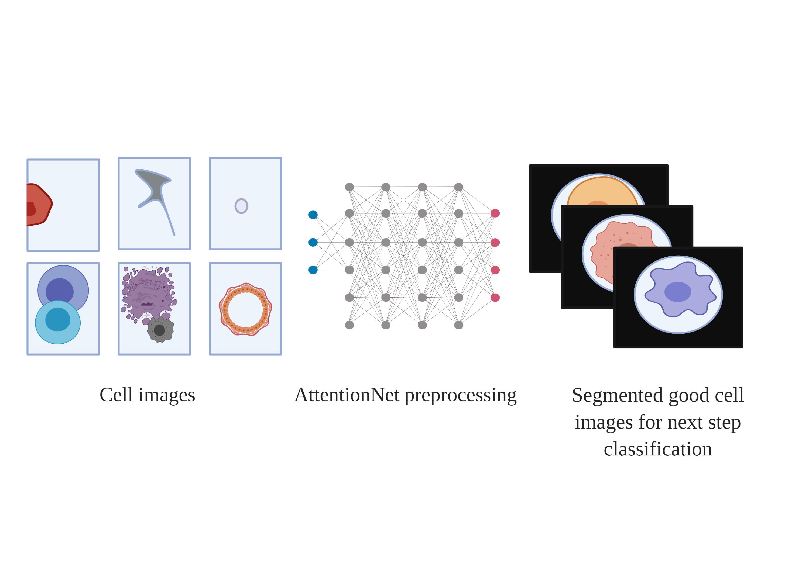
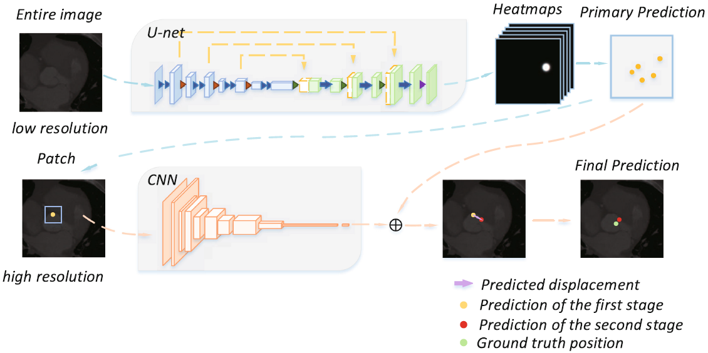

M.Sc. Computer Science
RWTH Aachen University, Aachen, Germany
Email: qiang.li@rwth-aachen.de
CV • LinkedIn • GitHub|
|
Qiang Li (利 强)
M.Sc. Computer Science RWTH Aachen University, Aachen, Germany Email: qiang.li@rwth-aachen.de CV • LinkedIn • GitHub |
About
|
Guten Tag! I am a graduate computer science student at RWTH-Aachen, working with Prof. Dr. Bastian Leibe and an IDEA Research Grant Student in Prof. Dr. Manfred Claassen Group, ETH Zürich. I got my B.S degree from the HFUT with Top academic performance and received four years national scholarships. My Bachelor was majoring in IoT and also founded the HFUT Robocup Lab. After my B.S studies, I worked as a computer vision working student in Siemens AG aachen gas turbin research center while taking the Master Informatik study at RWTH Aachen. |
News
Research Experiences
|
[Feedback from Mentor at ETH Claassen Lab]
|
Honors and Awards
Projects and Publications
 |
All You Need Is Cell Attention: A Cell Annotation Tool for Single-Cell Morphology Data |
|
Cell Morphology Based Diagnosis of Cancer using Convolutional Neural Networks: CellNet |
|
Localization and visualization of defects by PCA, KMeans, Colorspace Template Matching for Additive Manufacturing |
 |
A Cascade Regression Model for Anatomical Landmark Detection |
|
CFUN: Combining Faster R-CNN and U-net Network for Efficient Whole Heart Segmentation |
Miscellaneous
|
I have collected some tips about server environment set up solutions (e.g. CUDA driver, gcc/g++ version configuration in Ubuntu) and some good tutorials about LaTeX (written in Chinese), etc. Take a look here! |